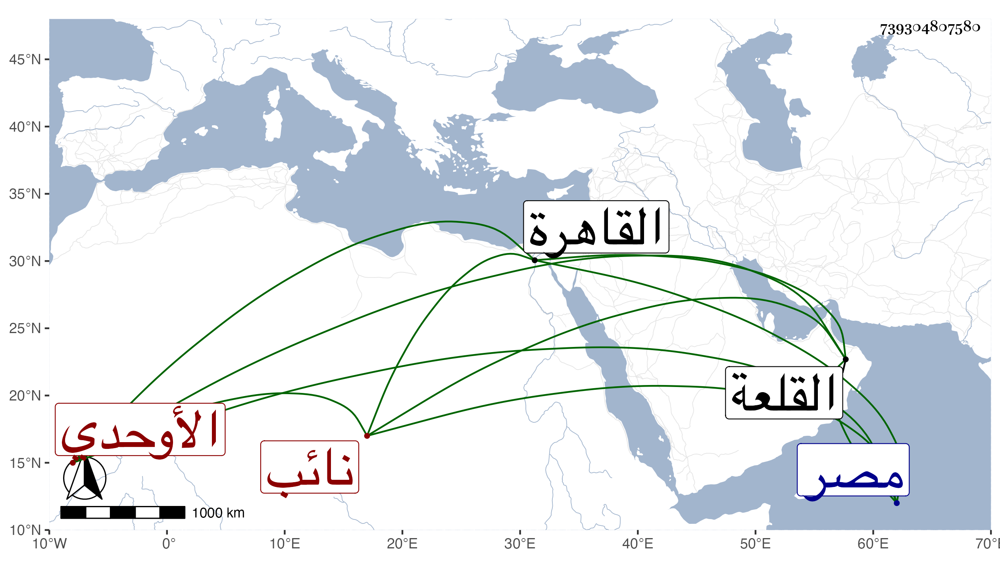

0902Sakhawi.DawLamic.ITO20230111-ara1.EIS1600.739304807580
Biography ID: 739304807580
أحمد بن عبد الله بن الحسن بن طوغان بن عبد الله الشهاب الأوحدي نسبة لبيبرس الأوحدي نائب القلعة لكون جده لما قدم من بلاد الشرق سنة عشر وسبعمائة اتصل بخدمته وناب عنه بالقلعة فشهر به القاهري المقرئ الشافعي الأديب المؤرخ . ولد في المحرم سنة إحدى وستين وسبعمائة وتلا بالسبع بل بالأربع عشرة على التقي البغدادي وكذا لازم الفخر البلبيسي الإمام في ذلك اثنتي عشرة سنة ، وسمع الحديث وطاف على الشيوخ الحراوي وجويرية ثم ابن الشيخة وغيرهم وقرأ التيسير للداني على السوداوي ، ورافق شيخنا في بعض ذلك وكتب بخطه وبرع في القراآت والأدب وجمع مجاميع واعتنى بالتاريخ وكان لهجا به وكتب مسودة كبيرة لخطط مصر والقاهرة تعب فيها وأفاد وأجاد وبيض بعضها فبيضها التقي المقريزي ونسبها لنفسه مع زيادات ، وله نظم كثير قال شيخنا سمعت من نظمه وفوائده وأنشد عنه قوله :
| إني إذا ما نابني أمر نفى تلذذي | واشتد منه جزعي وجهت وجهي للذي |
قال وكتب عنه رفيقنا الصلاح الأقفهسي :
| أغيد زاد في تباعده | عني فسقمي لأجله حاصل |
| مذ دام لي هاجرا بلا سبب | ما زلت حتى عملته واصل |
ونظمه سائر ومنه :
| رب قد ضاقت المسالك طرا | واعتراني هم براني ضرا |
| فأجرني من الهموم وهب لي | يا إلهي من عسر أمري يسرا |
وكان بزي الأجناد قليل ذات اليد . مات في تاسع عشري جمادى الأولى سنة إحدى عشرة . ذكره شيخنا في معجمه وأنبائه وأثبت ابن الجزري في ترجمة الفخر البلبيسي من طبقات القراء له قراءة هذا عليه وكذا قرأت بخطه أنه يروي عن زينب ابنة محمد بن عثمان بن عبد الرحمن السكري ابنة العصيدة وفي ترجمته من عقود المقريزي فوائد واعترف بانتفاعه بمسوداته في الخطط وأنه ناوله ديوان شعره قال وكان ضابطا متقنا ذاكرا لكثير من القراآت وتوجيهها وعللها حافظا لكثير من التاريخ سيما أخبار المصريين فإنه لا يكاد يشذ عنه من أخبار ملوكها وخلفائها وأمرائها وقلع حروبها وخطط دورها وتراجم أعيانها إلا اليسير مع معرفة النحو والعروض والنظم الحسن والحفظ في الفقه لمذهب الشافعي وكثرة التعصب للدولة التركية والمحبة لطريق الله ، إلى آخر كلامه عفا الله عنهما .
